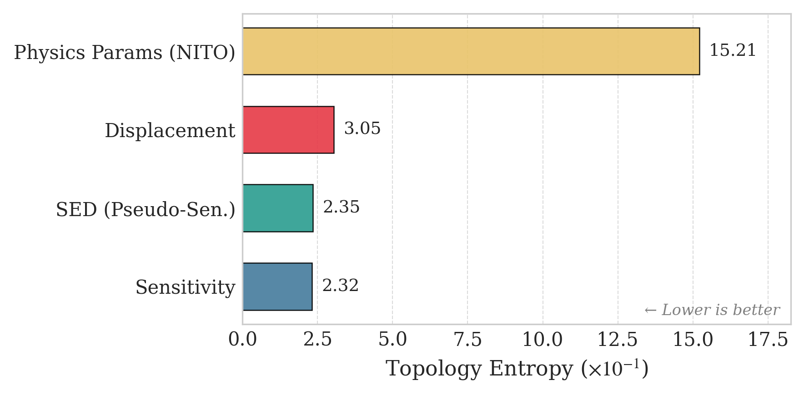
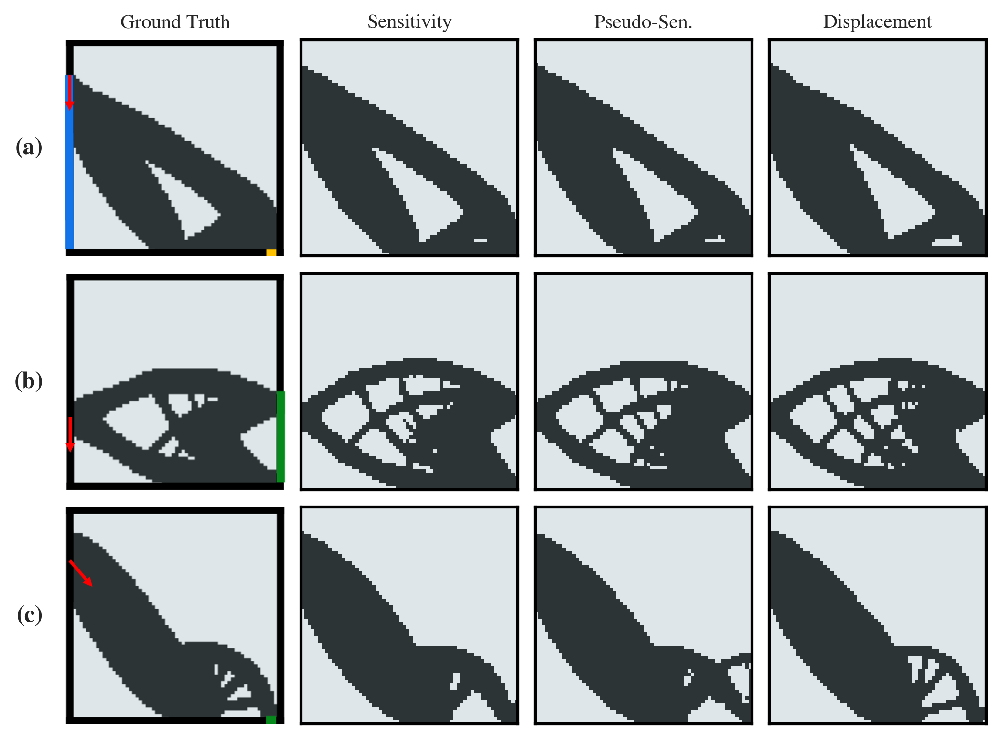
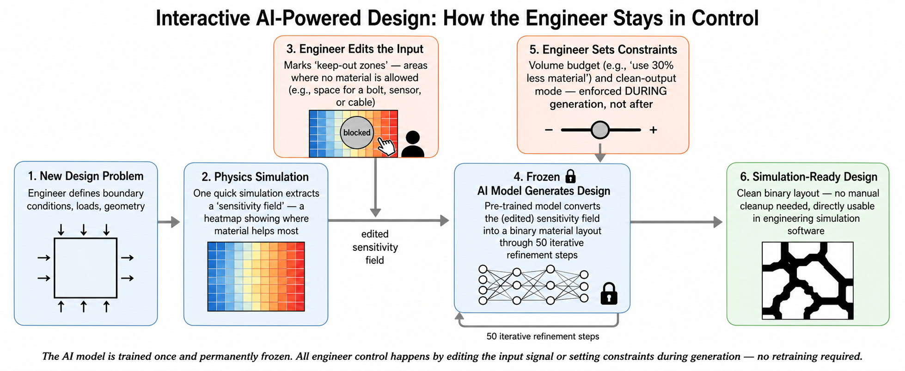
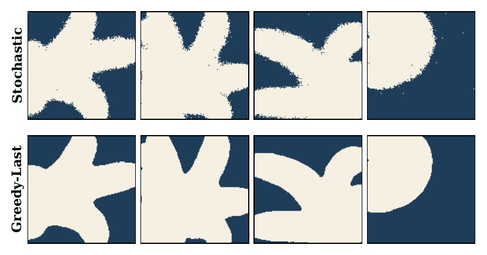
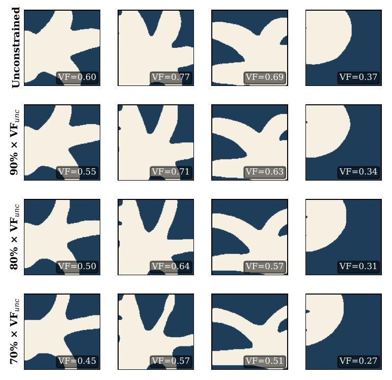
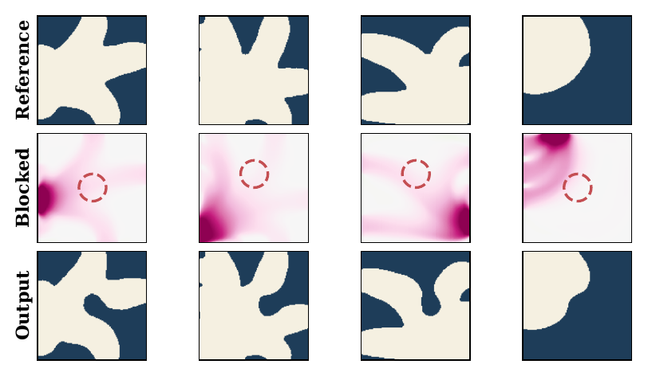
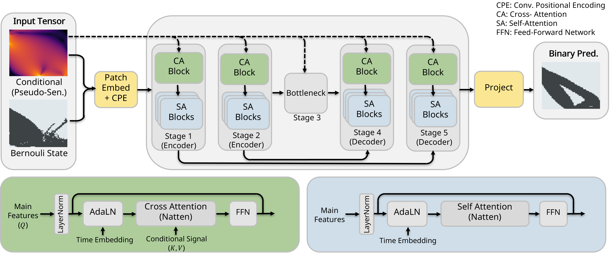

On the Generalization in Topology Optimization via Sensitivity-Conditioned Bernoulli Flow Matching
Abstract
Surrogate models for topology optimization (TO) exhibit highly variable out-of-distribution (OOD) generalization under distribution shifts such as changing loads or boundary conditions, yet the source of this variability remains unclear. We hypothesize that OOD performance is governed by how much information the conditioning signal preserves about the adjoint sensitivity that drives classical TO. Modeling the TO pipeline as a causal Markov chain, the Data Processing Inequality establishes that the sensitivity field is an information-theoretically optimal conditioning signal for topology prediction. However, computing exact adjoint sensitivities can be expensive or unavailable in practice; we observe that certain physical fields can approximate sensitivities through monotone transformations. To formalize this, we introduce pseudo-sensitivities to characterize which fields enable generalization versus those that are information-poor. We then show that a sensitivity-conditioned Bernoulli flow-matching generator empirically confirms these predictions: conditioning on sensitivities yields state-of-the-art OOD performance, while increasingly distant physical fields degrade toward raw parameter conditioning. Results hold across structural TO benchmarks under load shifts and our new CFD-TO dataset under boundary-condition shifts such as multi-outlet configurations.
Main Results
We evaluate on two physics domains: CFD topology optimization (turbulent channel flow, RANS k-ε) and structural topology optimization (2D compliance minimization). Both include in-distribution (ID) and out-of-distribution (OOD) test sets with boundary conditions never seen during training.
CFD — Simulation-Level Accuracy
Generated topologies evaluated through full CFD simulation in STAR-CCM+. Metrics: relative pressure-drop error (%) and 10%-accuracy.
| Model | ID Mean±Std | ID Med. | ID Acc. | OOD-M Med. | OOD-M Acc. | OOD-H Med. | OOD-H Acc. |
|---|---|---|---|---|---|---|---|
| DiT | 2.59±4.21 | 1.45 | 96.4 | 3.66 | 79.4 | 4.85 | 70.6 |
| UDiT | 2.37±3.55 | 1.65 | 97.2 | 3.59 | 76.4 | 7.00 | 62.7 |
| PDE-T | 2.98±6.03 | 1.82 | 95.9 | 3.05 | 75.5 | 4.35 | 68.6 |
| Ours | 3.44±4.03 | 2.63 | 94.0 | 2.82 | 77.6 | 2.70 | 74.5 |
Our model achieves the best OOD-Hard accuracy (74.5%) and median error (2.70%), demonstrating the strongest generalization to unseen boundary conditions.
Structural — Compliance Error
Evaluated on 992 OOD samples with load configurations not seen during training.
| Model | Params (M) | Mean ErrC (%) | Med. ErrC (%) |
|---|---|---|---|
| TopoDiff | 121 | 8.57 | 1.14 |
| NITO | 22 | 9.33 | 2.37 |
| Ours | 34 | 5.73 | 0.53 |
Conditioning Signal Matters
The choice of conditioning signal has a dramatic effect on OOD generalization. Sensitivity and pseudo-sensitivities (e.g., strain energy density) generalize well, while information-poor fields (e.g., raw displacement or pressure) degrade sharply under distribution shift.

Topology cross-entropy across conditioning signals. Sensitivity and SED (pseudo-sensitivity) achieve nearly identical CE; physics parameters yield substantially higher uncertainty.

OOD structural topologies: Ground truth vs. predictions conditioned on Sensitivity, SED (pseudo-sensitivity), and Displacement.
Deployment Enhancements
Raw generative outputs contain salt-and-pepper noise that makes topologies unusable in simulation software. Engineers also need control over material budget and spatial constraints — all without retraining. We address this with inference-time strategies that work with the frozen, pre-trained model.

The full deployment pipeline: an engineer defines a problem, runs one simulation to extract a sensitivity field, optionally edits the input, and the frozen model generates a clean, simulation-ready topology — no retraining required.

Greedy Terminal Sampling
Greedy last-step decoding eliminates salt-and-pepper artifacts, producing clean binary topologies directly usable in simulation.

Volume Fraction Control
Confidence-based progressive pruning enforces material budget constraints during generation while preserving structural integrity.

Spatial Blocking
Engineers mark keep-out zones in the input; the model generates topologies that respect these spatial constraints.
Architecture

The model uses a transformer backbone with cross-attention conditioning — physical fields attend to topology tokens via cross-attention, keeping conditioning and generation in separate streams. Training uses Bernoulli flow matching, an iterative refinement process from uniform random bits to binary topology via learned transition probabilities. At test time, the model generates a topology in a single forward pass with 50 refinement steps.
BibTeX
@misc{rashed2026generalizationtopologyoptimizationsensitivityconditioned,
title={On the Generalization in Topology Optimization via Sensitivity-Conditioned Bernoulli Flow Matching},
author={Mohammad Rashed and Duarte F. Valoroso Madeira and Babak Gholami and Caglar Guerbuez and Yunjia Yang and Nils Thuerey},
year={2026},
eprint={2606.02179},
archivePrefix={arXiv},
primaryClass={cs.LG},
url={https://arxiv.org/abs/2606.02179},
}